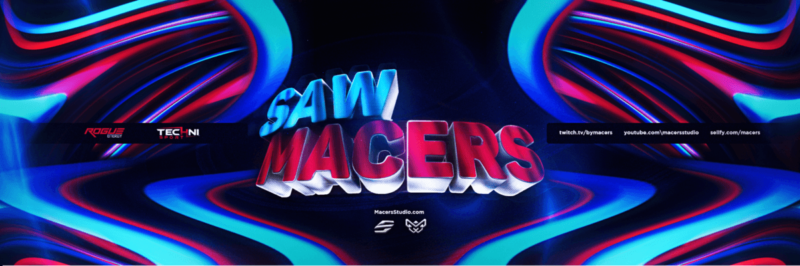

Bannière twitter pour Macers

Qu’y a-t-il de mieux que le mélange entre de la 2D et de la 3D ? J’ai créer le rendu en 3D du texte sur Cinema 4D en leur mettant une texture métallique à l’avant et une texture couleur neutre qui est le blanc. Après la conception du rendu 3d, je me suis attaqué à la partie 2D sur Photoshop en choisissant deux couleurs qui se marrie bien et qui soit flash.